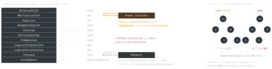

swift · folio
In one line: Operators are ordinary (usually static) functions with special syntax; a
precedence group decides how an unparenthesised expression parses. Subscripts
are property-like members called with [ ]. A literal has no type until context picks an
ExpressibleBy…Literal type. :=~= is what switch calls per pattern.
Download PDF Print view LaTeX source


How it works
- Declare, then implement:
infix operator **: PowerPrecedenceat file scope; implement asstatic funcin a type (found by overload resolution via the operand types) or a globalfunc.prefix/postfixfuncs carry the modifier; infix ones don’t. - Whitespace decides fixity: space on both sides or neither = infix;
:=-xprefix;:=x!postfix.a -bis not subtraction. - Reserved:
:==,:=->,.,:=?:,:=//,:=/*, prefix:=&, postfix:=?:=!.:=&&/:=||are overloadable — their right side is an@autoclosure, which is how they short-circuit. precedencegroup:higherThan/lowerThan,associativity(left/right/none, defaultnone),assignment: true(folds into optional chains like:==).- Subscripts: parameters have no argument labels unless you name one (
subscript(row r: Int)→g[row: 1]); several params, variadic, defaults, generic (4.0),static(5.1,Color["brand"]), get-only may beasync throws(5.5). No set-only subscripts. - Literals: the compiler calls the literal init of the contextual type, else the default (
Int,Double,String,Array…). callAsFunction(5.2, SE-0253): makesvalue(args)work; overloads, labels,mutating,asyncallowed. SwiftUI’sdismiss()is aDismissActionvalue.@dynamicCallable= the untyped, variadic cousin (scripting interop).:=~=: stdlib has it forEquatable(:===) andRangeExpression(contains); overload it to use a type as acasepattern.
Protocol (ExpressibleBy…) | required init |
|---|---|
IntegerLiteral · FloatLiteral | init(integerLiteral:) · (floatLiteral:) |
BooleanLiteral · StringLiteral | init(booleanLiteral:) · (stringLiteral:) |
ArrayLiteral | init(arrayLiteral: Element...) |
DictionaryLiteral | init(dictionaryLiteral: (K, V)...) |
StringInterpolation | init(stringInterpolation:) |
NilLiteral — for Optional only | init(nilLiteral: ()) |
Example — operators + subscripts
precedencegroup PowerPrecedence {
higherThan: MultiplicationPrecedence
associativity: right }
infix operator ** : PowerPrecedence
func ** (b: Double, e: Double) -> Double { pow(b, e) }
struct Vec: Equatable { var x, y: Double
static func + (l: Vec, r: Vec) -> Vec {
Vec(x: l.x + r.x, y: l.y + r.y) }
static func += (l: inout Vec, r: Vec) { l = l + r }
static prefix func - (v: Vec) -> Vec { Vec(x: -v.x, y: -v.y) } }
struct Grid { var cells: [Int]; let w: Int
subscript(r: Int, c: Int) -> Int { // g[1, 2]
get { cells[r * w + c] }
set { cells[r * w + c] = newValue } }
subscript(row r: Int) -> ArraySlice<Int> { // g[row: 1]
cells[r * w ..< (r + 1) * w] } }Example — literals, callAsFunction, ~=
struct Money: ExpressibleByIntegerLiteral {
let cents: Int
init(integerLiteral v: Int) { cents = v * 100 } }
let price: Money = 5 // 500 cents
struct Scale { let k: Double
func callAsFunction(_ x: Double) -> Double { x * k } }
let twice = Scale(k: 2); twice(21) // 42.0
struct Prefix { let s: String }
func ~= (p: Prefix, v: String) -> Bool { v.hasPrefix(p.s) }
switch path {
case Prefix(s: "/api/"): routeAPI() // Prefix ~= path
default: routeWeb() }
if case 200..<300 = status { ok() } // Range ~= statusTraps
- A custom infix operator with no group gets
DefaultPrecedence: mixing it with:=+or:===unparenthesised does not compile. - Forgetting
associativity: righton a power operator: the defaultnonerejects:=2**3**2;leftsilently gives 64. - A free
:===without: Equatableis invisible to generics,Set,firstIndex(of:); a free:=<gives nosort()— conform toComparable. let s: Set = [1, 1, 2]silently has 2 elements; a dictionary literal with a duplicate key traps at runtime.- Overloads + literals multiply the type checker’s search: “unable to type-check this expression in reasonable time” — add type annotations, split the expression.
- Don’t adopt
ExpressibleByNilLiteralin your types — Apple reserves it forOptional. - Operators nobody can read (
:=<~>,:=|>) cost more than they save — only for a real algebra (vectors, matrices, parsers).
Remember
“Group parses, function computes; subscripts have no labels; literals wait for a
type; case p means p ~= v.”